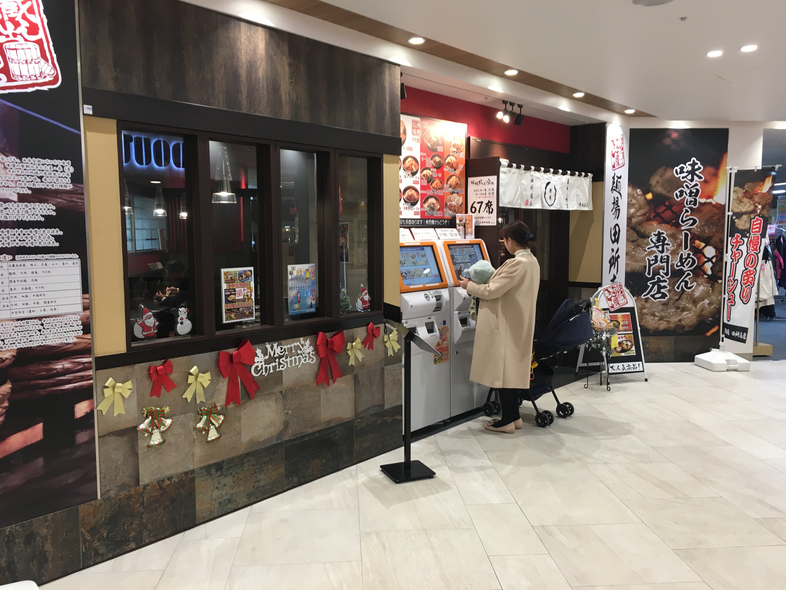

Distance from station
210 meters from JR Tsudanuma Station
phone number
047-411-7111
place
〒275-0016 Chiba Narashino City Yotsu 7 - 7 - 1 Loharu Tsudanuma 1F
business hours
11:00~23:30
Regular holiday
No holidays
・Return to the ramen list